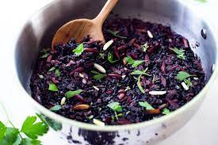

Black Rice

Description
Ingredients
- 2 tablespoons butter
- 1 cup black rice
- ¼ cup diced onion
- ¼ cup slivered almonds
- 1¾ cups water
- 1 cube chicken bouillon
Steps
- Melt butter in a saucepan over medium heat. Add black rice, onion, and almonds; cook and stir until lightly toasted, 5 to 10 minutes. Add water and bouillon cube; bring to a boil. Reduce hear to low, cover, and simmer until rice is tender and liquid is absorbed, 25 to 30 minutes.